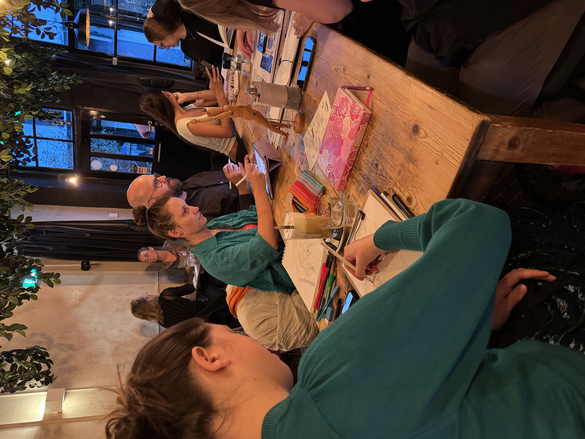
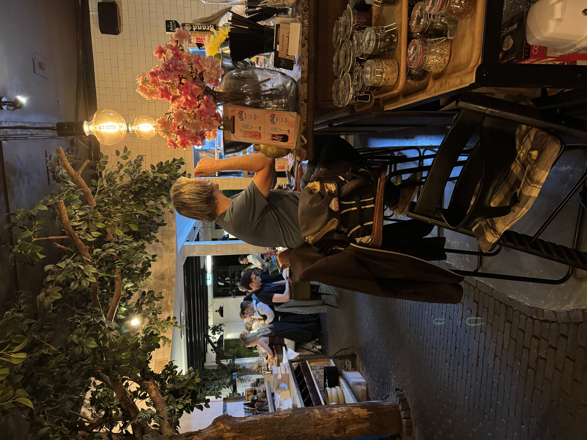
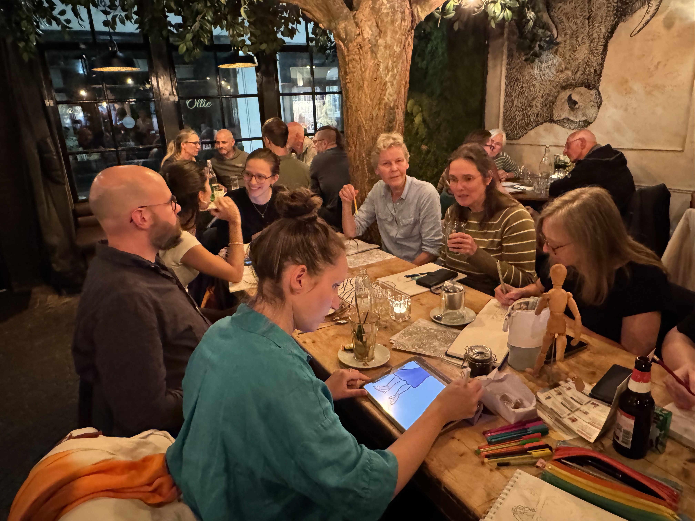
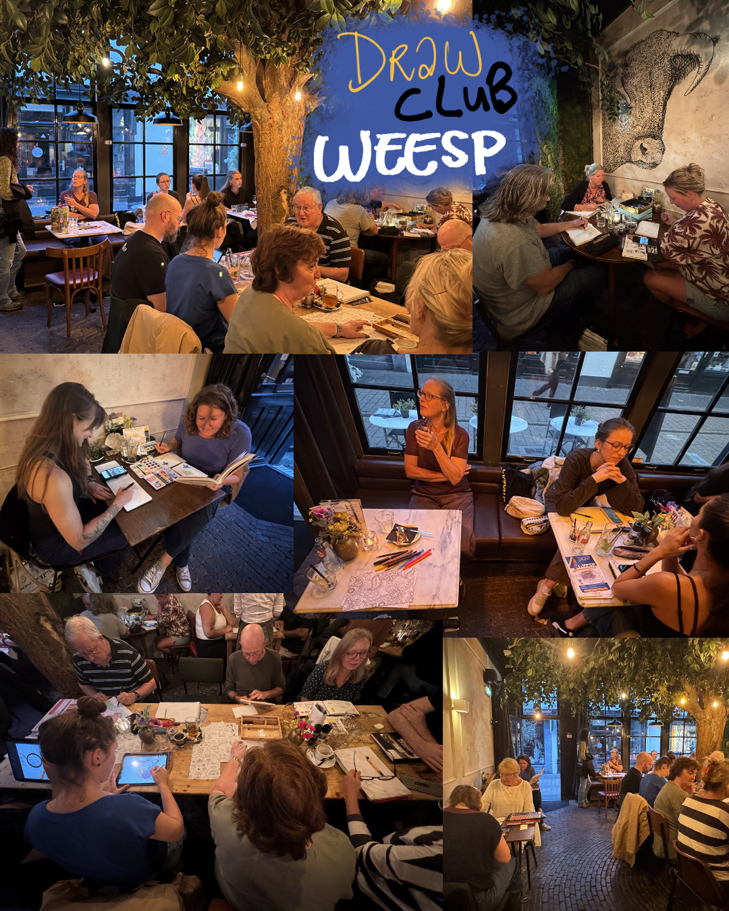

Woensdag 23 september
De tweede Drawclubavond zit er alweer op!
Op woensdag 23 september kwamen we opnieuw samen om gezellig te tekenen, ideeën uit te wisselen en bij elkaar inspiratie op te doen. Dit keer waren we met 13 tekenaars. Een stuk minder dan tijdens de eerste avond, maar dat kwam eigenlijk niet eens zo verkeerd uit…
Al was er ook deze keer weer een kleine uitdaging met de zitplaatsen.
Een goed tekenmaatje van mij moest ik bij aankomst helaas eerst aan de bar laten plaatsnemen, omdat er nergens anders plek was. Gelukkig kwamen er later wat tafels vrij. Daardoor kon hij alsnog gezellig aanschuiven aan een ronde tafel.
Maar toch… het liefst had ik natuurlijk gezien dat iedereen meteen een fijne plek had kunnen vinden. Zeker wanneer er iemand voor het eerst komt tekenen, wil ik diegene graag een warm welkom geven.

sep23-foto-1.jpg
sep23-foto-2.jpgEen café vol verrassingen
De café-eigenaar had vooraf al laten weten dat de reserveringen zo veel mogelijk achter in het café waren geplaatst, zodat wij voorin meer ruimte zouden hebben om te tekenen. Dat was een fijne gedachte! Alleen bleek bij aankomst dat vrijwel alle tafels bezet waren. En dat op een gewone woensdag, midden in september.
Zou er dan toch nog ergens vakantie zijn? Ik had gehoopt dat het op een doordeweekse dag wat rustiger zou zijn, maar dat viel dus anders uit.
Samen tekenen is meer dan alleen tekenen
Wat ik juist zo leuk vind aan de Drawclub, is dat je niet alleen aan je eigen tekening werkt. Je kunt ook eens bij een andere tekenaar kijken, een praatje maken of ervaringen uitwisselen over materialen en technieken.
Om de Drawclub gratis en vrijblijvend te kunnen houden, is een café voorlopig een fijne optie. Het nadeel is alleen dat we afhankelijk zijn van de drukte en de beschikbare tafels.
Op zoek naar een fijne tekenplek
Daarom ga ik de komende tijd eens rondkijken of er misschien een andere ruimte is die beter bij de Drawclub past. Want het belangrijkste is dat iedereen zich welkom voelt en een fijne plek heeft om creatief bezig te zijn.

sep23-foto-3.jpgOp een zwoelige woensdagavond 19 augustus

eerste-avond.pngDe allereerste tekenavond was een succes! 🍀 Maar liefst 24 tekenliefhebbers kwamen opdagen, niet wetend hoeveel mensen er zouden komen, of het zou klikken, of de sfeer goed zou zijn. Gewoon beginnen.
Het werd meteen precies wat ik gehoopt had. Mensen die elkaar niet kenden schoven samen aan tafel en begonnen te tekenen. Geen cursus, geen opdracht, gewoon doen.
Aan het einde van de avond had iedereen iets gemaakt en was er volop gepraat over van alles, over tekenen, over Weesp, over het leven. Dit is het begin van iets moois.